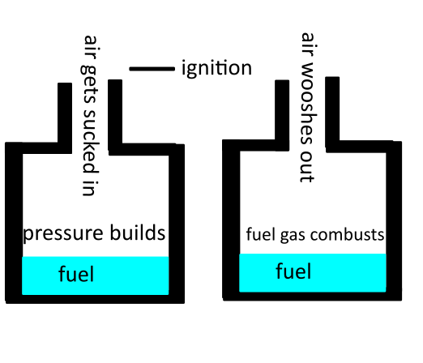

now you may ask, how are pulsejets related to rocket science? well the answer is, the line between jet engines and rockets are that jet engines have an intake to mix the jet fuel with the air, rockets on the other hand have pressurized tanks of oxidiser to create thrust even in the vaccume of space, therefore jets are a very close relative to rockets
1. pour around 10 ml of alcohol into the can, make sure you cut the tab out of the soda bottle
shake it for around 5 minutes for best result, or if you smell a strong smell of rubbing alcohol you can then stop
light it up and hear it go BRRRRT!
TIP: if it doesnt continue to compust try cooling the bottom of the can as that will hep the circulation
a pulsejet works because in the intake or in this case the mouth of the can, ignites, the fuel then expands to the back of the bottle and draws in air through the intake, it then repeatedly pulses due to the incoming air and thats why its called a pulse-jet
